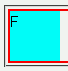
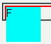

clear: left;（またはright/both）が指定され、同世代で後続しているものがないbr要素（br要素の直後に親要素の終了タグがある場合）が親要素のボックス内に包含されない。
<div style="border:2px solid red;"> <div style="float:left; width:50px; height:50px; background:aqua;">Float</div> <br style="clear:left;"> </div>
赤色の実線ボーダーが設定されたdiv要素は、br要素までを包含する（フロートのdiv要素を完全に包含する）はずです。
Moz1.0.1での表示（標準モード）
WinIE6.0での表示（標準モード）
br要素と親要素の終了タグの間に何らかの文字列や要素を置くとこの不具合を回避できます。
<div style="border:2px solid red;"> <div style="float:left; width:50px; height:50px; background:aqua;">Float</div> <br style="clear:left;">Clear </div>
要素の幅を指定するとWinIE5.0で別のバグ（WinIEバグ097）が発生する場合があります。また、幅を指定すると内部のフロートを包含するという挙動自体がCSS仕様と違うものです（WinIEバグ053）。
親要素のwidthプロパティやheightプロパティの値を明示することでも不具合を回避することができますが、WinIE5.0ではこの対策を施したボックスの後方にフロートがある場合にWinIEバグ097が発生することがあります。
WinIE6.0では標準・互換モードともに不具合の発生が確認されました。